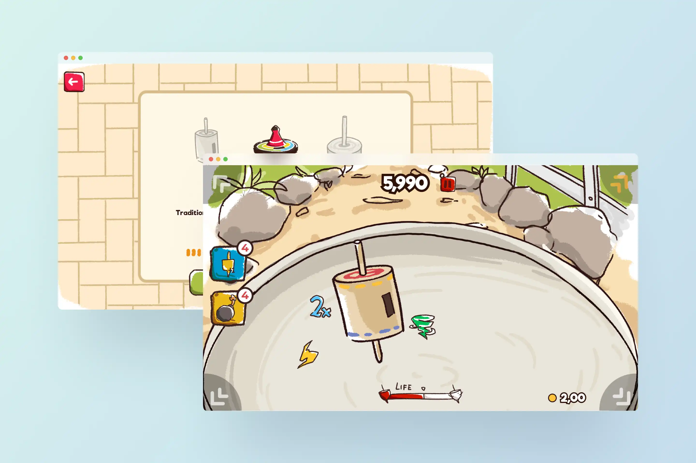
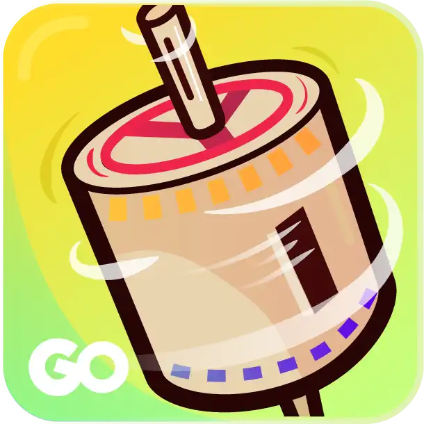
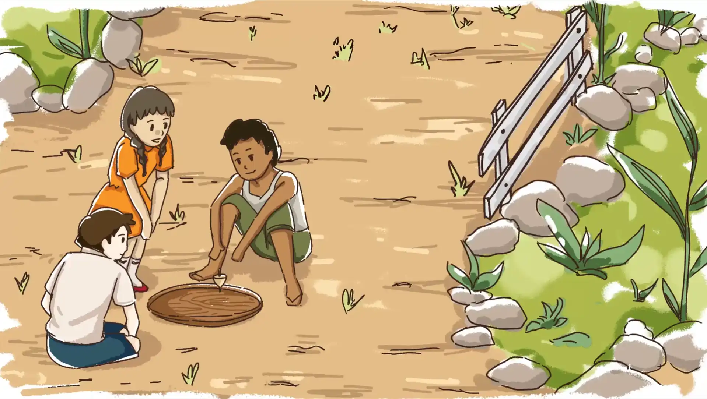
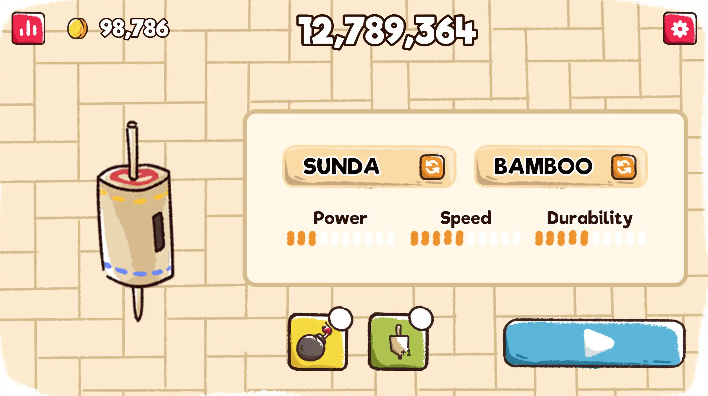
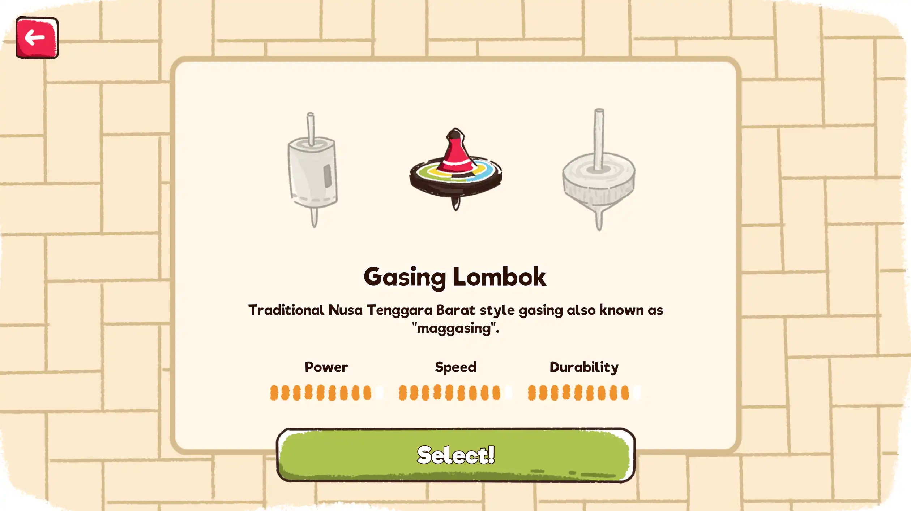
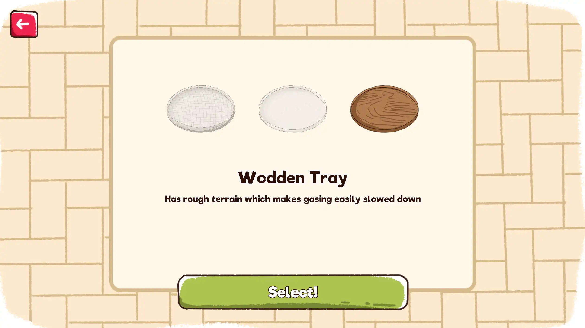
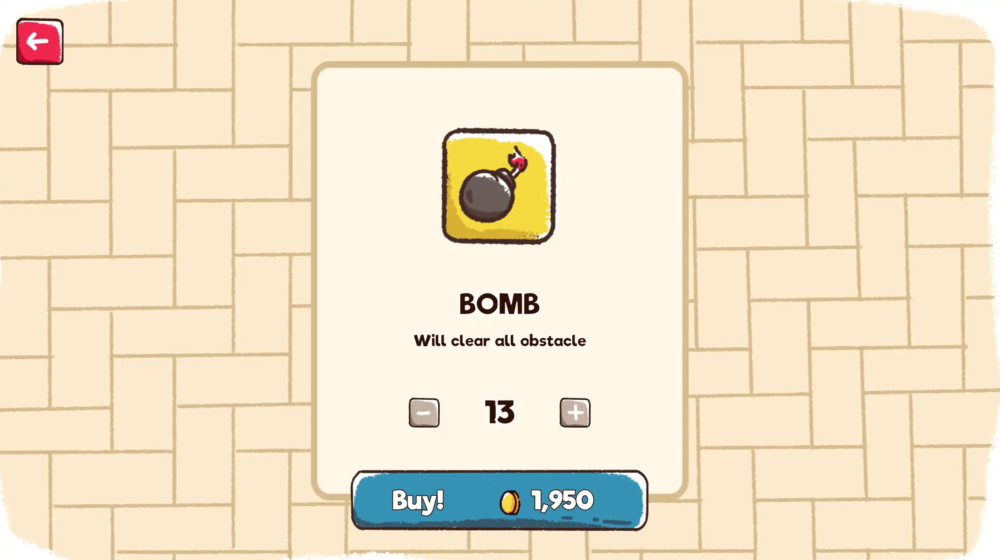

Go Lieur Go
An interactive game project blending playful mechanics and local storytelling.
- Category
- Interactive Media
- Period
- 2019
- Role
- Game Concept
- Tools
- Unity
A 2D casual PC game built around the Indonesian tradition of gasing (spinning tops), combining balancing gameplay, a hand-drawn visual style, and smartphone gyroscope interaction.

Project Overview
Lieur Go is a casual 2D game developed by the Gado Gado Group. The core gameplay revolves around keeping a spinning gasing balanced on a platform. The player controls the spinning platform and its balance through a smartphone gyroscope, creating a physical interaction between the player's movement and the game.
The project uses gasing as its central theme to connect Indonesian and Japanese spinning-top traditions. The concept presentation specifically references gasing in Indonesia and 独楽 (koma) in Japan as related traditional toys.

Game Concept
The game is designed around a simple high-score loop:
- Keep the gasing spinning.
- Balance the platform so the gasing does not fall.
- Manage the changing gameplay conditions.
- Use available power-ups to support the run.
- Continue playing to achieve a higher score.
The final presentation describes the game as:
| Attribute | Description |
|---|---|
| Genre | Casual |
| Dimension | 2D |
| Platform | PC |
| Monetization | Free-to-play with in-game purchases |
| Objective | High score |
Experience Design
The interaction design focuses on making the physical act of balancing a spinning object understandable through a simple game interface.
The main menu presents the player's score, available coins, selected gasing, selected tray/platform, gasing attributes, power-ups, and the action to start the game.

The selection flow lets players compare different gasing and platform options. One example shown in the presentation is Gasing Lombok, described as a traditional West Nusa Tenggara style of gasing, also known as "maggasing."

The project also explores environmental differences through platform selection. The Wooden Tray is described as having rough terrain that makes the gasing slow down more easily.

Gameplay System
The gameplay screen combines several systems into one view:
- A live score.
- A coin balance.
- Player health/life.
- The spinning gasing.
- Gameplay effects.
- Power-up controls.
- A multiplier indicator.
The presentation demonstrates a gameplay state with a spinning gasing on a circular platform and visual feedback for active effects.

The project also includes a power-up purchase system. The demonstrated Bomb power-up is described as clearing all obstacles and can be purchased using in-game coins.

Visual Design
The visual direction uses a hand-drawn, illustrated style with a warm palette and a strong connection to the physical materials associated with traditional toys and play environments.
The interface uses:
- Illustrated gasing and tray assets.
- A woven/bamboo-inspired background pattern.
- Rounded interface panels.
- Large, high-contrast buttons.
- Playful typography.
- Bright accent colors for interactive elements and gameplay feedback.
Digital Product Development
The project covers multiple layers of digital product development rather than only the final interface:
- Game concept and gameplay definition.
- UI layout and interaction states.
- Character/object and environment assets.
- Gameplay sprites and effects.
- Sound-effect organization.
- Game interface implementation.
- Gameplay prototyping and demo.
The project materials show the progression from interface and asset work toward an executable gameplay experience. The final presentation includes both the designed interface states and a playable gameplay demonstration.